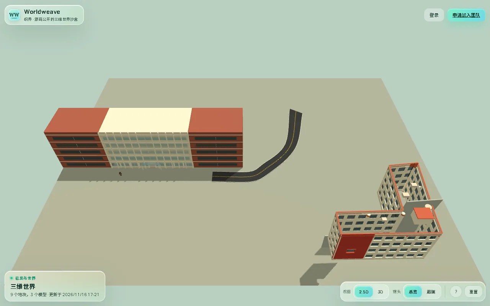

SOURCE-AVAILABLE · AI WORLD BUILDER
从一块地块，
织出一个世界。
Worldweave 把地块、道路、AI 建模、环境时间与发布审核放进同一个工作台。校园只是起点——园区、展场、乐园，任何世界都可以从一处空地开始。
worldweave / 已发布世界
LIVE

世界时间18:42
黄昏
已发布世界三维世界
9 地块 · 3 模型
AI 程序化建模分阶段生成
体块 → 结构 → 材质
02 / BUILD
LAYER BY LAYER
先有一块地。
让路，长出来。
让世界，站起来。
世界不是一次性导入的。从一块 12 × 12 的地块开始，边界、道路和建筑都可以继续编辑。
画出道路，加断点拐弯，让路口自然过渡。地块之间开始发生关系。
描述一栋建筑，让 AI 从体块开始生成。模型落下，世界时间开始走。
- 01地块
- 02道路
- 03模型
03 / WORLD TIME
A WORLD HAS ITS OWN HOUR
同一个世界，
在四个时刻醒来。
点击切换时刻。太阳高度、天空、灯光与氛围一起变化——这是 Worldweave 世界时间系统的实时预览。
WORLD CLOCK
18:42
黄昏 · 24°C · 微风
环境光照预览 · 可调时刻 / 天气 / 风 / 人工照明
当前版本是可调环境时间；自动昼夜循环与季节在路线图中。
04 / INSIDE
NOT A MOCKUP
不是概念图，
是已经能用的工作台。
每一张都是实际界面。切换标签，看看世界从编辑到发布经过的房间。
/
LIVE PREVIEW
一个世界，被认真确认之后才出现在这里。
访客看到的是管理员审核通过后冻结的版本。OPEN TO BE INSPECTED · OPEN TO BE EXTENDED
世界还在生长。
下一块地，
等你来织。
读代码，搭一个自己的世界，或者从一个小 issue 开始。Worldweave 的下一版，欢迎一起完成。
源码公开 · CC BY-NC-SA 4.0 ·
禁止商业用途，商业使用需单独授权